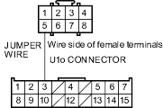
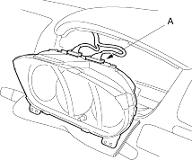
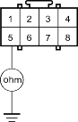

- Connect the No. 3 terminal of the U1o connector and the No. 5 terminal of U3o connector with a jumper wire.
U3o CONNECTOR

Wire side of female terminals
- Turn the ignition switch ON (II).
- Check the SRS indicator light.
Does the SRS indicator light go off?
YES - Faulty SRS unit; replace the SRS unit. 
NO - Go to step 34.
- Turn the ignition switch OFF.
- Disconnect the jumper wire between the No. 3 terminal of the dashboard wire harness B 18P connector and the No. 5 terminal of the U3o connector.
- Check the No. 13 (10A) fuse in the under-dash fuse/relay box.
Is the fuse OK?
YES - Go to step 40.
NO - Go to step 37.
- Replace the No. 13 (10A) fuse in the under-dash fuse/relay box.
- Disconnect the C1 connector (A) from the gauge assembly.

- Check resistance between the No. 5 terminal of the U3o connector and body ground. There should be 1 M ohm or more.
U3o CONNECTOR

Wire side of female terminals
Is the resistance as specified?
YES - Faulty SRS indicator light circuit in the gauge assembly; replace the gauge assembly.
NO - Short to ground in the floor wire harness or in dashboard wire harness A; replace the faulty harness.